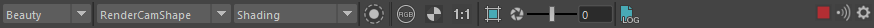
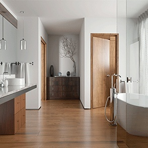

Arnold 渲染视图窗口
要观看演示部分渲染视图功能的视频，请单击此处。
Arnold 渲染视图窗口是一个交互式渲染 (IPR) 工具，旨在针对场景中发生的更改提供实时反馈，同时解决 DCC 原生渲染视图存在的一些限制。渲染视图中增加了很多方便美工人员使用的功能，可帮助他们处理着色、照明和外观开发过程，从而改善交互性并减少转换/场景刷新时间。例如：
- 拖动鼠标的过程中（而不是松开鼠标时）渲染即会更新，而且更新过程非常流畅、延迟很低。
- 用户可随时选择不同的摄影机、AOV 和着色模式，而无需重新导出场景。
- 使用鼠标拾取一个对象时即会在视口中选择该对象，同时在渲染视图中亮显该对象。
- 隔离对象、灯光、材质甚至是各个着色器节点，从而更便于调试着色树。
- 基本颜色校正。
- 状态栏可提供有关正在进行的渲染及光标下像素的全面信息。
- 原生 3D 摄影机操纵，包括框显选择对象和框显全部。
- 为常用操作和显示模式提供键盘快捷方式。
- 存储图像快照，以便于比较。
Arnold 渲染视图窗口可在 Arnold 工具架和 Maya Arnold 菜单中找到。
使用渲染视图
默认情况下，渲染视图的作用类似于 IPR 会话，即从负 AA 采样开始，以一定的步数为增量，对场景进行渐进渲染。在场景中所做的每个更改都会自动触发渲染更新。此行为可通过更改以下渲染视图选项进行修改：
- “场景更新”(Scene Updates)可以禁用。这可以防止每次更改场景时都自动更新。用户随后可通过调用“渲染”(Render)来手动触发新渲染。
- “逐步精细化”(Progressive refinement)可以禁用。这时会跳过中间步骤，直接以“最终”AA 质量渲染图像。
禁用这两个选项后的行为与 Maya 的“渲染”(Render)命令相同。
操纵
默认情况下，显示在渲染视图窗口中的图像可使用 Alt 键进行 2D 操纵（平移和缩放）：
- Alt + 鼠标左键可平移图像（使用鼠标中键也可平移）。
- Alt + 鼠标右键可放大/缩小。
如果启用了“3D 操纵”(3D Manipulation)选项，则可使用 Alt 键在 3D 空间中移动渲染摄影机：
- Alt + 鼠标左键可旋转摄影机。
- Alt + 鼠标中键可平移摄影机。
- Alt + 鼠标右键可缩小/放大摄影机。
区域渲染
您可以使用“裁剪区域”(Crop Region)工具仅渲染特定区域。要启用此功能，可以访问菜单“渲染 > 裁剪区域”(Render > Crop Region)、按图标  ，或者在按住 SHIFT 键的同时拖动区域。
，或者在按住 SHIFT 键的同时拖动区域。
选择相关区域后，“裁剪”选项处于禁用状态，这时在图像上点击会被视为“拾取”（请参见下面的部分）。
要清除“裁剪区域”并渲染整个图像，请在“裁剪区域”(Crop Region)选项处于活动状态时单击窗口中的任意位置。您也可以单击裁剪区域旁边的小十字标记来清除该区域。
拾取
您可以在渲染视图中“拾取”对象，这会在视口中选择可见几何体。执行此操作时，选定的几何体会在按下鼠标按钮期间在渲染视图中暂时亮显。
拾取几何体（面）将亮显它
状态栏
状态栏位于渲染缓冲区正下方，提供有关正在进行的渲染的信息。显示以前存储的快照时，则会显示有关相应以前渲染的信息。
- 如果使用“调试着色”(Debug shading)模式，将会显示调试模式（OCCLUSION、UV、NORMAL 等）。
- 如果使用“隔离选定对象”(Isolate Selected)模式，则会显示选定节点的名称。“锁定选择”(lock selection)
 选项可用于隔离选定对象，该选项会忽略选定对象的更改。
选项可用于隔离选定对象，该选项会忽略选定对象的更改。 - 正在执行渲染时会显示“正在渲染...”(Rendering...)。
- 渲染完成后会显示渲染时间。请注意，此渲染时间对应于最后一个 AA 步，即大致对应于在批处理模式下执行此渲染所需的渲染时间。
- 分辨率(Resolution)：宽度 x 高度。
- 缩放因子(Zoom factor)：50%、1:1、200% 等。
- 摄影机名称(Camera name)：显示正在渲染的摄影机的名称。
- 设备(Device)：使用 GPU 进行渲染时，显示“GPU”。使用 CPU 进行渲染时，不会显示任何内容（默认情况下）。
- 采样信息(Sampling info)：AA 采样数/GI 漫反射采样数/GI 镜面反射采样数/GI 透射采样数/GI SSS 采样数/GI 体积采样数。
- 内存使用量(Memory usage)：显示当前渲染使用的内存。
启用“显示像素信息”(Show Pixel Information)时，会显示以下相对于鼠标光标的附加字段信息：
- 像素“XY”对应于渲染图像中鼠标位置的坐标。
- 像素“RGBA”：Arnold 返回的鼠标光标下方的像素 RGBA 值。
- 亮度(Luminance)：Arnold 返回的鼠标光标下方的亮度值。
- EV：Arnold 返回的鼠标光标下方的 EV 曝光值。
禁用“窗口 > 状态栏 > 显示状态栏”(Window > Status Bar > Show Status Bar)可隐藏状态栏。
菜单
文件(File)窗口(Window) 视图(View) 渲染(Render)
文件(File)
保存图像(Save Image)
将当前显示的图像保存到磁盘。根据格式，对图像进行颜色管理。例如，JPEG 是 sRGB，EXR 是线性。
保存多层 EXR(Save Multi-Layer EXR)
将当前显示的图像连同多层 EXR 中的所有 AOV 保存到磁盘。
保存图像选项(Save Image Options)
选择使用颜色管理和视图变换设置保存图像。
加载快照图像(Load Snapshot Image)
可以在快照库中加载已有图像以进行比较。
如果未设置文件扩展名，则会将图像保存为 JPEG 格式。
保存最终图像(Save Final Images)
启用后，输出图像（包括 AOV）会在渐进渲染的每个最终步自动转储到文件。这些图像会根据渲染设置中的定义保存到相应文件夹。
导出 Arnold 场景
导出当前场景的 .ass 文件。
窗口(Window)
显示设置(Display Settings)
在渲染视图窗口右侧的“显示设置”(Display Settings)面板中显示颜色校正设置。
像素信息(Pixel Information)
显示有关鼠标光标下像素的信息。包括 XY 像素坐标以及渲染器（在应用颜色管理前）返回的 RGBA 输出值。
状态栏 > 显示状态栏(Status Bar > Show Status Bar)
在渲染视图底部显示状态栏。此状态栏会显示一些有用的值，例如渲染时间、分辨率、采样值和内存使用量。
状态栏 > 显示像素信息(Status Bar > Display Pixel Information)
在状态栏中显示鼠标光标下方像素的信息。
框选全部(Frame All)
默认情况下，用户按 Alt 键可以在 2D 模式下操纵渲染视图（使用鼠标左键平移 2D 图像，使用鼠标右键或鼠标滚轮放大/缩小）。在此模式中，“框显全部”(Frame All)可调整显示的缓冲区，使其适应查看器大小。如果启用了“3D 操纵”(3D Manipulation)，用户执行的操纵将不再影响 2D 图像，而是在 3D 空间内移动摄影机。在此模式下，“框显全部”(Frame All)会移动摄影机，框显整个场景几何体，就像在视口执行此操作一样。
框显当前选择(Frame Selection)
默认情况下，用户按 Alt 键可以在 2D 模式下操纵渲染视图（使用鼠标左键平移 2D 图像，使用鼠标右键或鼠标滚轮放大/缩小）。在此模式中，“框显当前选择”(Frame Selection)可调整最终的“裁剪区域”(Crop Region)，使其适合查看器大小。如果没有裁剪区域处于活动状态，则此选项的行为与“框显全部”(Frame All)完全相同。如果启用了“3D 操纵”(3D Manipulation)，用户执行的操纵将不再影响 2D 图像，而是在 3D 空间内移动摄影机。在此模式下，“框显当前选择”(Frame Selection)会移动摄影机，框显所选的几何体，就像在视口执行此操作一样。
实际大小(Real Size)
如果禁用了“3D 操纵”(3D Manipulation)（默认行为），“实际大小”(Real Size)会按照原始大小调整显示的缓冲区，而不考虑查看器大小。还可以使用工具栏中的“1:1”图标  。
。
3D 操纵(3D Manipulation)
默认情况下，用户按 Alt 键可以在 2D 模式下操纵渲染视图（使用鼠标左键平移 2D 图像，使用鼠标右键或鼠标滚轮放大/缩小）。如果启用了“3D 操纵”(3D Manipulation)，用户执行的鼠标操纵将不再影响 2D 图像，而是在 3D 空间内移动摄影机。使用 Alt + 鼠标左键可旋转摄影机，使用 Alt + 鼠标中键可平移摄影机，而使用 Alt + 鼠标右键可进行放大和缩小（类似于视口）。
工具栏图标(Toolbar Icons)
用于选择在工具栏上显示哪些图标。

使外部区域变暗(Darken Out-Of-Region)
使渲染区域以外的区域变暗。
显示渲染分片(Show Render Tiles)
渲染时显示渲染分片的可见边。
鼠标居中缩放(Mouse-centered Zoom)
选择是否以鼠标光标为中心进行缩放（默认已启用）。
形状拾取(Shape Picking)
选择单击查看器时是否选中形状（默认已启用）。
视图(View)
启用 AOV(Enable AOVs)
渲染在“渲染设置”(Render Settings)中定义的任何 AOV。这些可以在渲染期间显示（请参见下文）。禁用此选项时无法在渲染视图窗口中拾取几何体。
AOV
“渲染设置”(Render Settings)中定义的 AOV 列表。此列表也会作为下拉菜单显示在工具栏中。您甚至可以在渲染期间更改显示的 AOV。
所有通道(All Channels)、红色(Red)、绿色(Green)、蓝色(Blue)、Alpha、亮度(Luma)
在渲染视图中显示所选的颜色通道。您可以使用工具栏图标在它们之间切换。还可以通过快捷菜单执行此操作。
测试分辨率(Test Resolution)
使用“布满窗口”(Fit Window Size)选项时，系统会根据窗口大小动态调整渲染分辨率，从而始终实现 1:1 显示比率。
存储快照(Store Snapshot)
将显示的图像存储在内存中。存储一个或多个快照后，工具栏上会显示一个滑块，供用户在这些快照之间导航。
上一个快照(Previous Snapshot)
在之前存储的快照之间导航。“上一个”指的是之前的旧快照。
下一个快照(Next Snapshot)
在之前存储的快照之间导航。“下一个”指的是之后的快照。
删除快照(Delete Snapshot)(Del)
删除当前快照。
快照文件夹(Snapshots Folder)
在磁盘上保存快照的快照文件夹。
在 Arnold 渲染视图中按 S 热键，可以保存快照。按左右箭头键可在快照之间导航，按上下箭头键可在快照显示和实时渲染之间切换。
快照库，使用缩略图显示每个已存储快照。您还可以添加名称和注释。
日志
打开 Arnold 渲染日志窗口，您可在其中查看易读版本的 Arnold 日志。
IPR 日志频率(IPR Log Frequency)
允许您控制 IPR 会话期间日志的详细级别。默认情况下，最后一个渐进式步只会为最终步恢复场景详细级别。
有关如何读取日志文件的信息，请单击此处。
加速
名为成像器 的后期处理节点在输出驱动程序之前对像素进行操作。成像器 可以链接在一起。
显示设置(Display Settings)
打开渲染视图窗口右侧的颜色校正面板，从中可使用各种选项来调整显示的像素颜色。
Gamma：使用简单的 Gamma 曲线调整显示的颜色。
曝光(Exposure)：使用 F 制光圈调高或调低显示的图像的曝光度。
视图变换(View Transform)：选择要在渲染视图中查看图像时应用的默认颜色变换。
以下内部场景窗户附近的过度曝光区域特别受益于色调映射。
|  | |
| 无色调映射 (sRGB) 视图变换 | Unity 中性色调映射视图变换 |
渲染视图会根据 Maya 的“颜色管理”(Color Management)设置（包括默认使用的 SynColor 原生视图变换）来更新“视图变换”(View Transform)。但是，与其他 Maya 查看器一样，您仍可仅覆盖 ARV 中的视图变换。
建议您使用 ACES 颜色管理。
背景
有时可用来更改显示的渲染中背景像素的颜色。
背景颜色(BG Color)：应用纯色背景颜色。
背景图像(BG Image)：显示背景图像或纹理。
背景棋盘格(BG Checker)：显示棋盘格图案作为背景。
颜色(Color)：应用纯色背景颜色。
应用颜色管理(Apply Color Management)：将颜色管理设置应用于背景。
前景(Foreground)
在渲染视图窗口中应用前景图像。
启用前景(Enable FG)：显示/不显示前景图像。
图像(Image)：前景图像的文件路径。
缩放(Scale)：缩放前景图像。
偏移(Offset)：为前景图像添加 2D 位置偏移。
应用颜色管理(Apply Color Management)：将颜色管理设置应用于前景。
像素信息(Pixel Information)
在所有 AOV 上，显示鼠标光标下方像素的详细值。
- 像素“XY”：对应于渲染图像中鼠标位置的坐标。
- 形状(Shape)：鼠标光标下方形状的名称。
- 平均像素(Average Pixels)：周围像素的平均像素值。
- RGBA：Arnold 返回的鼠标光标下方的 RGBA 值。
- 亮度(Luminance)：Arnold 返回的鼠标光标下方的亮度值。
- HSV：Arnold 返回的鼠标光标下方的 HSV 值。
- 显示(Display)：鼠标光标下方的颜色校正值。
像素信息值
A B 比较工具
允许您使用擦拭工具选择两个要比较的快照。选择单个快照时会将该快照与当前渲染进行比较。
A/B 比较工具（右键单击快照）
渲染
运行 IPR (空格键)(Run IPR (Space))
停止/启动渲染。
场景更新(Scene Updates)
启用后，场景中发生任何更改时都会自动实时刷新渲染。如果禁用该选项，在场景中发生的更改将不会中断渲染，但仍可按“渲染”(Render)进行手动刷新。
刷新渲染(Refresh Render)(F5)
重新启动渲染。
中止渲染(Abort Render)(Esc)
停止正在进行的渲染。
逐步精细化(Progressive Refinement)
启用后，系统将从负 AA 采样开始逐步对场景进行采样，从而迅速获得反馈。如果禁用该选项，则只会渲染最终 AA 过程。
裁剪区域(Crop Region)
该选项允许您在渲染视图中拖动某个区域来执行区域渲染。启用该选项后，在渲染视图中选择几何体将不起作用。在渲染视图窗口中单击会清除裁剪区域。
您也可以按住 SHIFT 键的同时在渲染视图中拖动选择某个区域，执行临时区域渲染。
更新整个场景(Update Full Scene)
允许您清除并重新生成整个 Arnold 场景。这可避免关闭并重新打开渲染视图。
IPR 停止时清除场景
IPR 停止时清除整个 Arnold 会话。IPR 重新启动时，将从头开始转化整个场景（与“更新整个场景”(Update Full Scene)一样）。
摄影机(Camera)
显示场景中的摄影机列表（包括 Maya USD 摄影机），从而便于选择要用于渲染的摄影机。此列表也会作为下拉菜单显示在工具栏中。
保存 UI 线程(Save UI Threads)
允许您保存一个或多个线程，以免影响 UI 速度，从而改善交互体验。
调试着色(Debug Shading)
使用各种调试着色模式临时替换应用于所有对象的着色。该选项仅用于交互式渲染，不会更改场景中的任何内容。
禁用(Disabled)：使用在场景中指定的真实着色器进行渲染。
基本(Basic)：禁用场景中的所有着色器，并切换为灰色“ndoteye”着色器（一种快速着色模式）。
照明(Lighting)：使用白色的 Lambert 着色器渲染场景。
遮挡(Occlusion)：使用环境光遮挡着色。
线框(Wireframe)：将几何体显示为线框。
法线(Normal)：可视化法线向量（介于 0 和 1 之间，在切线空间中）。
UV：显示主 UV 集的坐标（红色=U，绿色=V）。
基本体 ID(Primitive ID)：根据每个基本体（三角形、曲线）索引显示随机颜色。
质心(Barycentric)：显示基本体内部的参数化坐标（三角形的质心、曲线段的参数化长度和宽度）。
对象(Object)：根据每个对象 ID 显示随机颜色。
隔离选定对象(Isolate Selected)：隔离渲染中的选定节点。您可以选择以下节点：
几何体(Geometry)：仅渲染选定的几何体；所有其他几何体都渲染为黑色蒙版。
材质(Materials)：仅渲染选定的材质；所有其他材质都渲染为黑色蒙版。
着色器：可以隔离着色器树中的任意单个着色器（工具、纹理、混合等）部分，并在渲染中显示最终输出。着色树不含隔离的着色器的任何几何体都会渲染为黑色蒙版。
灯光(Light)：隔离灯光意味着禁用所有其他灯光，让场景只被所选灯光照亮。
使用 MEL 脚本编辑渲染视图选项
可在 Maya 中使用 MEL 脚本设置渲染视图选项。例如，arnoldRenderView -opt "3D Manipulation" "1"。 也可以编写以下脚本打开查看器而不触发渲染：arnoldRenderView -mode open。
“开-关”选项中可接受的值为“True”、“False”、“0”、“1”、“On”和“Off”。
对于不可检查的操作（例如渲染、中止等），任何值都会触发该操作。
MEL 中的示例：
arnoldRenderView -opt "3D Manipulation" "1"
arnoldRenderView -opt "AOVs" "indirect_diffuse"
arnoldRenderView -opt "Camera" "perspShape"
arnoldRenderView -opt "Run IPR" "False"
arnoldRenderView -opt "Frame All" "1" // ->the second argument doesn't matter
arnoldRenderView -opt "Save Image (original)" "C:/tmp/happy.exr"
arnoldRenderView -opt "Display Pixel Information" "True"
arnoldRenderView -opt "Test Resolution" "50%"
arnoldRenderView -opt "Debug Shading" "Occlusion"
arnoldRenderView -opt "Show Debug Shading icon" "1"
arnoldRenderView -opt "Crop Region" " 50 50 200 200" // minx miny maxx maxy 对于“显示设置”(Display Settings)，要编辑在“颜色管理”(Color Management)组中找到的参数，必须添加
前缀“Color Management”。而对于在“背景”(Background)组中找到的参数，应添加前缀“Background”。 因此：
arnoldRenderView -opt "Color Management.gamma" "2.2"
arnoldRenderView -opt "Color Management.Tonemap" "OCIO"
arnoldRenderView -opt "Color Management.OCIO File" "/tmp/config.ocio"
arnoldRenderView -opt "Background.BG" "BG Image"
arnoldRenderView -opt "Background.Color" "0.1 0.2 0.4"
arnoldRenderView -opt "Background.Image" "/tmp/image.###.jpg"
arnoldRenderView -opt "Background.Scale" "1.5 1.2"
这些函数可以在打开渲染视图之前调用，而且会在之后自动应用。